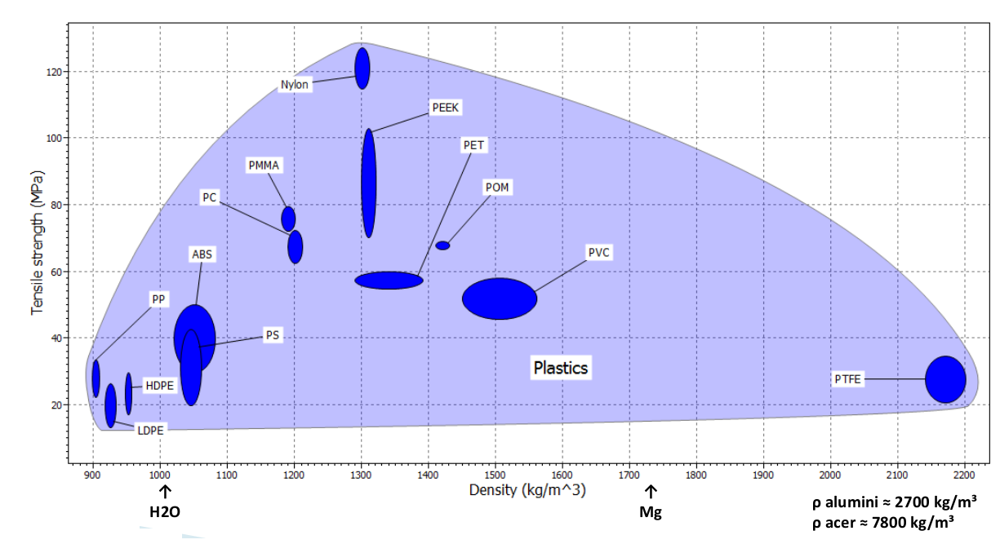

Termoplàstics#
Pàgina en desenvolupament
Encara estem treballant en aquest document.
Esperem oferir-vos properament el seu contingut.
Disculpeu les molèsties.
Plàstic |
Nom |
Propietats |
Aplicacions |
|---|---|---|---|
PET |
Polietilè teleftarat |
Molt resistent, lleuger, innocu. Alta transparència. Alta resistència al desgast i la corrosió. Coeficient de fricció molt baix. Bona resistència química i tèrmica. Bona barrera pel \(CO_2\), acceptable pel \(O_2\) i la humitat. Resistència als raigs UV. |
Ampolles de begudes, especialment les carbonatades. Textils. Mòduls fotovoltaics. Barreres impermeables pels cables submarins. Impressió 3d (PETG) de peces d’alta tecnologia per a aplicacions a medicina, aeronàutica i indústria de l’automòbil o la producció de semàfors amb LEDs. Films per a cintes magnètiques d’àudio i vídeo. |
HDPE |
Polietilè d’alta densitat |
No és tòxic. Alta resistència a la compressió i tracció. Transparent. Resistent a baixes temperatures. Impermeable. Inert al contingut, baixa reactivitat. |
Utensilis domèstics: cubs, recipients… Ampolles per a detergent, lleixiu, xampú, lactis. Bosses de supermercat. Envasos per a pintures, olis, gelats. Tambors. Canonades per a gas, telefonia, aigua potable, mineria. Peces mecàniques. Marcs de motxilla. Taps d’ampolla. Aïllants de cables coaxials. Dipòsits de combustible per a vehicles. Cirurgia plàstica. Joguines |
PVC |
Policlorur de vinil |
Ampli rang de duresa. Impermeable. Genera gasos tòxics per incineració. |
Canonades, soles de sabates, guants, vestits impermeables, mànigues. Discos de música. Marcs de finestres. Pel·lícules primes, de colors o transparents, amb adherència a la part posterior (vinils), tallades amb una talladora controlada per ordinador. Fundes de dossiers i carnets. |
LDPE |
Polietilè de baixa densitat |
No és tòxic. Flexible, tou i lleuger. Transparent. Inert al contingut. Impermeable. Baix cost |
Bosses, sacs, recobriment de séquies. Canonades per a reg. Base per a bolquers d’un sol ús. Bosses per a sèrum. Contenidors hermètics domèstics. Tubs i poms: aliments, medicaments, cosmètics. |
PP |
Polipropilè |
Resistència a la temperatura, a l’esquerdatge per esforços i a diversos solvents químics, alcalís i àcids. Resistent als impactes i a l’abrasió, fàcil de netejar. |
Cadires i taules. Joguines. Para-xocs d’automòbils. Dipòsits de combustible. Recipients per a aliments per a microones i congelats. Films per embalatges. Pots de plàstic per a productes làctics. Contenidors de plàstic resistent. Gerros de plàstic, bateries de cotxe, papereres, ampolles de productes farmacèutics, contenidors de gel, vaixelles i galledes. Aïllament de cables elèctrics en ambients poc ventilats. Motlles de plàstic. Dispositius a medicina, ja que suporta la temperatura d’esterilització amb autoclau. Filtres per a l’aire, gas i líquids. Condensadors elèctrics. Canyetes. Cilindre exterior de bolígrafs. |
PS |
Poliestirè |
Transparent. Dur i fràgil. Resistent a la humitat. Inert químicament, no reacciona amb els aliments ni altera el seu gust o olor. |
Films transparents per a embalatges i embolcalls de productes alimentaris. Gots, plats i coberts d’un sol ús. Envasos per a iogurt. Safates per carn, peix, verdures, fruita, galetes. Prestatges i interior de les neveres. |
PSE |
Poliestirè expandit |
Blanc. Esponjós i tou. Absorbeix impactes i so. |
Embalatge, envasat, aïllament tèrmic i acústic. Revestiment interior de cascs de motoristes i ciclistes. Contenidors de planter per a cultius. Caixes de peix. Neveres per transport de vacunes. Embalatge protector en el transport de neveres, rentadores, ordinadors i petits electrodomèstics. |
PMMA |
Metacrilat, acrílic, polimetilmetacrilat, plexiglàs® |
Transparent, excel·lent claredat òptica. Molt resistent. Alta resistència a l’impacte, 10-20 vegades la del vidre. Resistent a la radiació UV. Excel·lent aïllant tèrmic i acústic. Més lleuger que el vidre (~50%). Combustible, sense generar gasos tòxics. Fàcil mecanitzat. Atacat per acetona, àcid acètic i d’altres compostos, especialment orgànics. Bon grau de biocompatibilitat. |
Lents de fars (navegació). Fars i pilots de cotxes. Finestres, rètols lluminosos, rellotges. Parabrises d’avió. Claraboies, fins-i-tot de submergibles. Marcs de fotos. Aquàriums. Lents intraoculars. Reconstrucció i substitució de peces dentals. Lents de contacte dures. |
PTFE |
Tefló, politetrafluoroetilè |
Fricció negligible, la més baixa coneguda. Antiadherent. Alta resistència a la temperatura. Incombustible. Aïllant elèctric molt flexible. |
Estris de cuina, revestiment de paelles, superfícies d’encimeres. Puntes de bombes de dessoldadura tova. Revestiment antifricció de coixinets. Aïllament per a cables per a altes temperatures. Revestiments d’avions, coets i naus espacials. Elements articulats. Mànegues i conductes per on circulen productes químics. Superfícies de contacte de baixa fricció, com ara els tacs a la base dels ratolins d’ordinador. Circuits impresos exposats a freqüències de microones. |
Cel·lofana |
Transparent, fins-i-tot amb pigments. Flexible i resistent. Brillant. Adherent. Biodegradable. |
Embalatges, embolcalls i empaquetats. Cinta adhesiva cel·lo. |
|
PA |
Niló, poliamida |
Translúcid, brillant, fins-i-tot amb pigments. Molt resistent, flexible i impermeable. Inert. |
Teixits, raspalls de dents, cordes de raquetes i guitarres. Xarxes de pesca. Paraigües. Engranatges i coixinets. Cremalleres. Cargols i femelles aïllants. Sutures a cirurgia. Polseres de rellotge. Paracaigudes. |
ABS |
Acrilonitril butadiè estirè |
Rigidesa, resistència a atacs químics, estabilitat a alta temperatura, duresa. Tenacitat a qualsevol temperatura. Alta resistència a l’abrasió. Produeix gasos tòxics en la impressió 3D, les impressores han de ser tancades amb filtres de ventilació. |
Parts cromades, parts internes i externes de la carrosseria dels cotxes que estiguin pintades. Joguines. Impressió 3D. Carcasses de teclats d’ordinadors, ratolins, impressores, televisors. Grapadores. Instruments musicals. |
PC |
policarbonat |
Resistent als productes químics, a la calor i a les radiacions ultraviolades. Dur i transparent. Alta resistència a l’impacte |
Carcasses per a telèfons, portalàmpades, tires de contacte múltiple, peces de relés, endolls, interruptors de seguretat, components per a les calculadores electròniques, preses de corrent de tub fluorescents i mesuradors de corrent. Lents de contacte semirígides. Sostres d’hivernacles, salons, i estacions de ferrocarril, així com finestres per a cabines telefòniques i gimnasos. Fars, llums posteriors, reflectors, ventiladors i radiadors. CDs, DVDs. Lents d’ulleres de sol, ulleres de natació i busseig. Viseres de cascos esportius de policies antiavalots. Membranes per hemodiàlisi. |
PEEK |
Polieteretercetona |
Extraordinàriament fort i rígid. Excel·lent resistència a la flama. Alta resistència química, a les radiacions ionitzants i la temperatura. Preu alt comparat amb altres termoplàstics. |
Aplicacions d’alta tecnologia: coixinets, peces de pistó, bombes, columnes de cromatografia líquida d’alt rendiment, vàlvules de plaques de compressors, aïllament de cable elèctric. Aplicacions d”ultrabuit: indústries aeroespacial, automotriu i química. |
POM |
Poliacetal |
Extraordinària resistència química, bona tenacitat a baixes temperatures, baix coeficient de lliscament, bona resistència a l’abrasió, gran capacitat d’esmorteïment del soroll per fricció. |
Engranatges mecànics, elements lliscants i de guia, peces de carcassa, molles, cadenes, cargols, femelles, rodes de ventilador, peces de bombes, cossos de vàlvules. Aïllants, bobines, connectors, peces d’aparells electrònics com televisors, telèfons. Palanques de control dels volants dels cotxes. Tanques, manetes, rodets per a mecanismes lliscants de mobles. Pistoles d’airsoft. Cremalleres. Pues, gaites, boques d’instruments, puntes de baquetes. Mànecs de ganivets. Peces de moviment mecànic a rellotgeria. Encenedors. |
En aquest gràfic [Fau14] podem fer-nos una idea global dels termoplàstics, la seva densitat i la seva resistència a la tracció:
